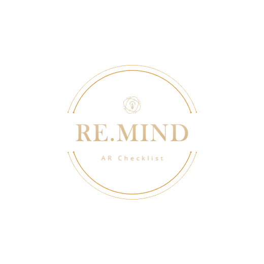
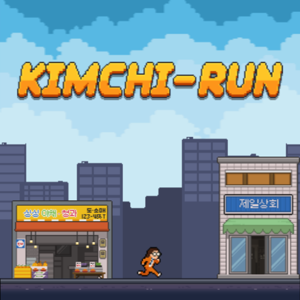

그때 갑자기 닌자가 나타났다!
랜덤으로 생성되는 닌자의 공격을 피해 달아나는 3D 아케이드 게임.

달로 향하자!
움직이는 발판, 보이지 않는 발판, 함정을 피해 목표에 빠르게 도달하도록 도전 해보세요!

AR 지구를지켜라
실감나는 연출, 음악, 운석을 파괴하는 스마트폰 AR 슈팅 게임.

RE.MIND : AR Check List
AR 이미지 트래킹을 이용한 2D UI 체크리스트 관리 어플리케이션.

함께해요, 어린이 교통안전
AR 이미지 트래킹 어린이 교통안전 콘텐츠. 교육자료를 확인해주세요!

VR 명작동화 탐험대
아이들을 위한 교육용 VR 동화 교육 콘텐츠.

Catch You Catch Me
특별한 장소를 기록하고 공유하는 위치 정보 AR 콘텐츠.

The UnScene : Fear Unseen
몬스터의 존재를 밝히는 3인치 TPS 공포게임

트릭컬 리바리브 팬 게임 : 버터의 즐거운 산책
트릭컬 리바이브 팬 게임 : 음식을 먹어 점수를 획득하는 HTML Web 게임

트릭컬 리바이브 팬 게임 : 델리아의 남극탐험
트릭컬 리바이브 팬 게임 : 장애물을 피하고 아이템을 먹어 점수를 획득하는 HTML Web 게임

김치-런
유니티 6 챌린지 게임 : 김치 재료를 얻으면서 장애물을 피해 오랫동안 살아남아라!